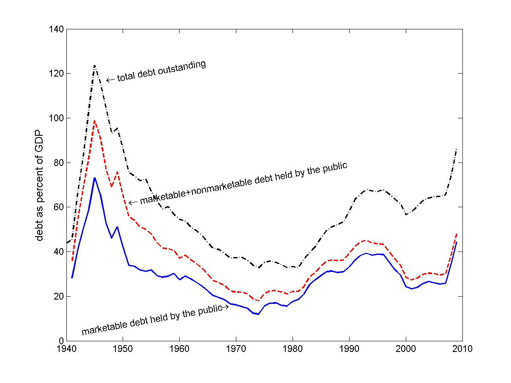
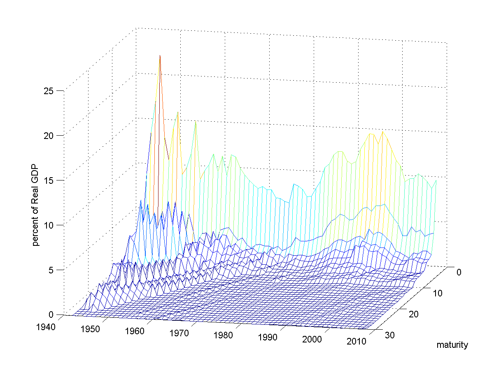

Post World War II¶
Evolution of the Post World War II Debt/GDP Ratio

{kind=link}
Marketable Debt held by the Public, Total Debt held by the Public, and Total Debt Outstanding

{kind=link}
Payments Owed by Year and Maturity Divided by GDP
{kind=link}
blah, blah
Comparison of the Official Interest Costs and Holding Period Returns
Variable Mean Std Dev Official Interest/Debt 5.20 2.54 Inflation 3.73 2.67 Official Interest/Debt - inflation 1.47 3.31 Real Return on Marketable Debt 1.63 4.86 Means and Standard Deviations of Returns
Period Debt to GDP return
Inflation GDP
GrowthDeficit
to GDP
start end change 1941 1945 37.0 97.2 60.2 2.8 -9.7 -20.5 84.7 1945 1974 97.2 16.9 -80.3 32.8 -50.2 -31.8 -34.7 1974 1981 16.9 19.9 3.0 12.4 -11.0 -4.4 5.8 1981 1993 19.9 48.2 28.3 37.6 -13.5 -12.6 17.8 1993 2001 48.2 28.5 -19.7 14.6 -5.9 -12.2 -15.9 2001 2009 28.5 48.8 20.3 9.3 -5.8 -3.9 20.8 1941 2009 37.0 48.8 11.8 109.4 -96.3 -85.3 78.5 1945 2009 97.2 48.8 -48.4 106.6 -86.5 -64.8 -6.2 Contributions to Changes in the Debt-to-GDP Ratio
- The U.S. paid off its WWII debt with a mixture of low returns (inflation), GDP growth, and primary surpluses.
- The U.S. did not really inflate away its debt in the 1970s.
- Debt-holders received large positive real returns in the early 1980s as inflation came down.
- Since the 1990s the real return on debt has about equaled GDP growth so the change in \(B/Y\) has about equaled the primary surpluses.